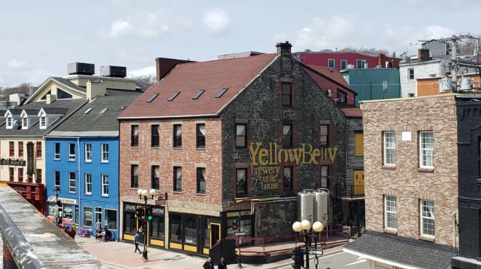

Our Services
Brewery Crawl
Avalon Adventures invites you to experience the thriving craft beer scene on the Avalon Peninsula of Newfoundland and Labrador with our exclusive group adult package.
Join us on a guided tour of the region's best breweries and discover the art and science of craft brewing. Our expert guides will take you behind the scenes of each brewery, where you'll learn about the brewing process, the history of craft brewing on the Avalon Peninsula, and the stories behind each beer.
Our tour includes visits to some of the most renowned breweries in the area, including:
- Yellowbelly Brewery
- Quidi Vidi Brewing Company
- Landwash Brewery
- Bannerman Brewing Co.
- Ninepenny Brewing
- Dildo Brewing Co.
- Baccalieu Trail Brewing Company
- Bay de Verde Brewing Company
At each brewery, you'll have the opportunity to taste a variety of beers and ales, including seasonal and limited edition brews. Meet the brewers and chat with fellow beer enthusiasts as you sample unique flavors and learn about the brewing process.
As part of this package, we provide transportation to and from each brewery, light refreshments, and a knowledgeable guide to enhance your experience. Our tours are perfect for groups of friends, couples, and solo travelers looking to experience the best of Newfoundland and Labrador's craft beer scene.
Come discover the vibrant and growing craft beer culture on the Avalon Peninsula with Avalon Adventures.
Price: $175+tax per person (includes one sampler beer at each brewery) for group rates contact our Beer Safari Guide Gary Xandier.
Family Culture Package
Avalon Adventures offers an exciting family package for visitors to St. John's that includes visits to The Rooms and the Johnson Geo Centre, as well as a delicious picnic lunch to feed the family of 4. This package is designed for families with 2 adults and 2 children who are 12 years old or younger.
The adventure begins with a visit to The Rooms, where families can explore the rich culture and history of Newfoundland and Labrador. With three floors of exhibits, galleries, and interactive displays, there is something for everyone to enjoy. Children can learn about the province's natural environment, discover the art and music of Newfoundland and Labrador, and even play with traditional toys and games.
Next, families will head over to the Johnson Geo Centre, where they will discover the fascinating geology of Newfoundland and Labrador. The centre features interactive exhibits and multimedia displays that allow visitors to explore the history of the Earth and the geological forces that have shaped the region. Children can enjoy hands-on activities and games that teach them about rocks, minerals, and fossils.
After a morning of exploration and discovery, families will enjoy a delicious picnic lunch that will be provided by Avalon Adventures. The picnic will include a variety of sandwiches, snacks, fruits, and drinks that will be sure to satisfy everyone's appetite.
This family package includes admission to both The Rooms and the Johnson Geo Centre for 2 adults and 2 children, as well as a guided tour of both facilities. The package also includes transportation to and from the attractions, so families can sit back and relax while enjoying the stunning views of St. John's and the surrounding countryside.
Overall, this family package is a great way for families to spend quality time together while learning about the rich culture and history of Newfoundland and Labrador, and enjoying a delicious picnic lunch along the way.
Price: $135 taxes included.
Price can be adjusted to add additional party members.
Novice East Coast Hiking Experience
Experience the natural beauty of Newfoundland's rugged coastline with our family two-day hiking package. On day one, you'll start your adventure on the Tinkers Point Path route, which takes you from the charming community of Mobile to the scenic Tors Cove. Along the way, you'll be treated to stunning views of the Atlantic Ocean and the surrounding coastline, as well as the chance to spot wildlife such as whales and seabirds. This hike is perfect for novice hikers, with a total distance of approximately 5 km.
On day two, you'll tackle the La Manche Village Path route, which takes you from Tors Cove to the historic La Manche Village. This hike is slightly longer than the previous day, at approximately 6.4 km, but still suitable for novice hikers. Along the way, you'll cross over beautiful suspension bridges and pass by crystal-clear streams and waterfalls. At the end of the trail, you'll have the opportunity to explore the remains of the abandoned La Manche Village, which was destroyed by a tsunami in 1929.
This family hiking package includes experienced guides who will accompany you on your journey and provide you with interesting facts and stories about the area's history and geography. Lunch and snacks will also be provided, so you can refuel and recharge while taking in the breathtaking views of Newfoundland's stunning landscape.
Price: $250 taxes included.
Price can be adjusted to add additional party members.
Family Ferryland Adventure
Avalon Adventures offers an exciting family package for visitors to the Avalon Peninsula that includes a visit to the historic Colony of Avalon and a scenic Lighthouse Picnic in Ferryland, Newfoundland and Labrador.
The adventure begins with a visit to the Colony of Avalon, a 17th century archeological site that offers a glimpse into the early European settlement of Newfoundland. Families can explore the site's restored buildings, including a governor's mansion, a church, and a bakery. Visitors can also learn about the history and culture of the area through interactive exhibits, costumed interpreters, and guided tours.
After exploring the Colony of Avalon, families will travel to the picturesque town of Ferryland, where they will enjoy a scenic Lighthouse Picnic. The picnic takes place at the foot of the historic Ferryland Lighthouse, which offers stunning views of the Atlantic Ocean and the rugged coastline. Families can relax on the grassy hillside and enjoy a delicious picnic lunch, featuring fresh local ingredients and homemade baked goods.
This family package includes admission to the Colony of Avalon for 2 adults and 2 children, as well as a guided tour of the site. The package also includes transportation to and from the Colony of Avalon and Ferryland, so families can sit back and enjoy the scenery along the way. The Lighthouse Picnic includes a blanket, a picnic basket filled with a variety of delicious foods, and beverages.
Overall, this family package is a great way for families to experience the history and natural beauty of the Avalon Peninsula, while enjoying a delicious picnic lunch along the way.
Price $300 tax included.
Price can be adjusted to add additional party members.
Whale Watching & Cod Jigging
Join us for a thrilling family/group activity that combines the excitement of whale watching with the traditional Newfoundland pastime of cod jigging.
We'll start our adventure with a scenic boat ride along the beautiful coastline of Conception Bay, where we'll have the chance to spot majestic whales breaching and blowing. Our experienced guide will provide interesting facts about these incredible creatures and their behavior in the wild.
Once we've had our fill of whale watching, we'll head to a prime fishing spot where we'll try our hand at cod jigging. Our guide will provide all the necessary equipment and teach us the techniques needed to catch our own fresh cod. It's a hands-on experience that's sure to create lasting memories.
After a successful day on the water, we'll bring our catch back to shore and enjoy a delicious seafood feast, cooked to perfection by Chef Asano. It's the perfect way to cap off an unforgettable day spent exploring the natural wonders of Newfoundland.
Price $125+tax per adult, $60 per child 12 and under, for group rates contact our Wave Whisperer, Neil Devone.